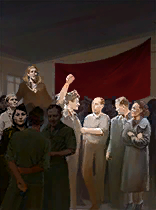
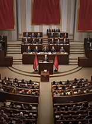

1. Header & Flavor Quotes
Starting Name: Republic of Italy
Starting Leader: Giorgia Meloni.
Focus Tree & Path Overview
Target Ideology: progressive / centrist / conservative / reactionary
Sub-Ideology: progressivism / centrist_populism / conservatism / reactionary_populism
Overview: Constitutional renewal, democratic stabilization, and European alignment.
2. Technical Infobox & Prerequisites
| Field | Value |
|---|---|
| Main Ideology (start) | conservative → subtype conservatism (FdI/FI/LN) |
| Capital | Rome |
| Country Tag | ITA |
| Focus Tree ID | italian_focus |
| Path | Trigger |
|---|---|
| Progressive | ITA_2027_election → Socialist_victory |
| Centrist | ITA_2027_election → Centerleft_victory |
| Conservative | ITA_2027_election → Conservative_victory |
| Reactionary | ITA_2027_election → Futuro_nazionale |
3. Lore & Geopolitical Goals
Background: Italy in 2025 is a nation hanging in the balance. Giorgia Meloni's center-right government faces a chronic economic crisis, massive immigration, growing internal tensions, and an unstable Europe. Political forces are becoming radicalized: on the right, neo-fascists push for a "Second March on Rome," while on the left, PDRC, CR-OSA, and Potere al Popolo organize in factories and public squares. In the center, social democracy attempts to hold together a crumbling country.
Short-term goals: stabilize the economy, control social tensions, define Italy's position inside or outside NATO and the EU.
Long-term goals: build an advanced social-democratic Italy, expanded welfare, deep European integration.
Main rivals: France, Germany, Austria, Croatia/Slovenia, Russia, USA/NATO, Vatican.
4. National Spirits & Modifiers
| Spirit | Effects |
|---|---|
| Italian Economic Crisis | Consumer Goods Factor +8%, Political Power -0.10/day, Stability -5% |
| Public Debt | Construction Speed -10%, Factory Output -5% |
| Social Tensions | Recruitable Population -5%, Monthly Popularity Change (ruling) -0.01 |
| NATO Member | Division Attack +5%, Join Faction Allowed |
| Social Reform | Stability +10%, Consumer Goods +5%, Research Speed +5% |
| Matteï Mediterranean Plan | Infrastructure +1 (Southern Italy), Trade Efficiency +10% |
5. Focus Tree Structure
The Italian tree has 5 main roots at Y=0 rows.
ITA_democratic_spectrum— center-left / center-rightITA_good_old_days— ultranationalismITA_on_the_side_of_the_proletariat— radical leftITA_reorganize_the_state— monarchism / autocracy(NATO / neutral geopolitical focus)
| Focus | Primary Effect |
|---|---|
ITA_democratic_spectrum | Root of the center-left parliamentarian path |
ITA_socialist_victory | ruling_party = progressive |
ITA_centerleft_victory | ruling_party = centrist |
ITA_green_new_deal | +200 PP, environmental focus |
ITA_european_integration | +Stability, In-depth look at the EU |
ITA_2027_election | 2027 Elections — choice between progressive and centrist paths |
6. All Parties & Leaders
| Photo | Leader | Party | Ideology | Icon |
|---|---|---|---|---|
 | Central Committee | Rifondazione Comunista, CR, PaP | totalitarian_communism-stalinism | |
 | Workers' Councils | Lotta Comunista | vanguard_socialism-leninism | |
 | Central Council | Partito Comunista Rivoluzionario | revolutionary_socialism—Trotskyism | |
| Enzo Maraio | Partito Socialista Italiano | progressive-social_democracy | ||
| Elly Schlein | Partito Democratico, Verdi&Sinistra, 5 Stelle | centrist-social_liberalism | ||
| Giorgia Meloni | Frtelli d'Italia, Forza Italia, Lega nord | conservative | ||
| Roberto Vannacci | Futuro Nazionale | reactionary-reactionary_populism | ||
| Grand Governing Leadership | CasaPound / Forza Nuova | ultranationalism-neo_fascist | ||
| Emanuele Filiberto di Savoia | Casa Savoia | absolutism-monarchism |
7. Unique Events & Mechanics
2027 Elections: the ITA_2027_election focus generates a branching event that offers the player the choice between the progressive and centrist paths, based on the popularity of the ideologies (has_popularity > 0.40).
Revolutionary Coup: ITA_start_the_coup_de_main requires has_party_popularity vanguard_socialism > 0.50 and has_war = no, and unlocks three parallel paths (vanguard, revolutionary, totalitarian) based on the completed focuses.
| # | Event | Trigger | Consequence |
|---|---|---|---|
| 1 | The Second March on Rome | ITA_second_march_on_rome | Street clashes, Stability -20% |
| 2 | The International Rises | ITA_the_international | Declaration of the international |
| 3 | The King Returns to Rome | ITA_the_kingdom_reborn | Proclamation of the Kingdom of Italy |
| 4 | 2027 Elections | ITA_2027_election | Branching between center-left and progressive center-right paths |